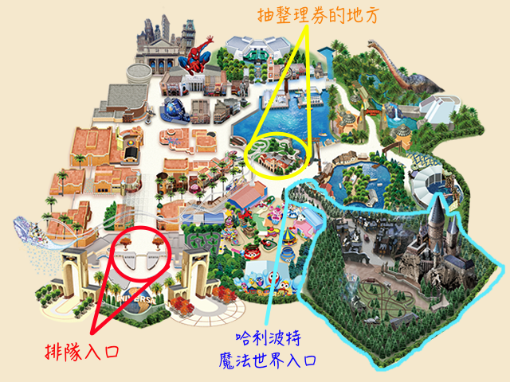
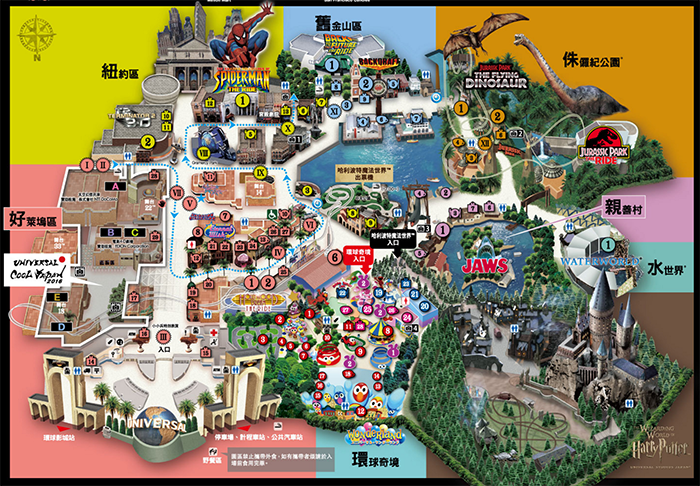

整理卷地圖
園區地圖
部落客推薦
環球奇境》如果你帶著小孩請直接先往這一區XD
飛天史努比｜就是飛起來的snoopy轉圈，兒童玩XD[好玩]史努比雲霄飛車大競賽｜意外刺激的過山車，我蠻愛的欸好玩又可愛
Hello Kitty夢幻蛋糕杯｜幼童可愛蛋糕版本咖啡杯
Hello Kitty蝴蝶結大收藏｜進去看Kitty展覽&跟Kitty拍照主要是要你買照片…
[必玩]艾蒙的GO-GO滑板｜超好玩又可愛的旋轉海盜船
莫比的氣球之旅｜升高轉圈圈 很和平的看風景設施
芝麻街大兜風｜小孩的賽車遊戲 有大小車蠻可愛的
大鳥的大頂篷馬戲團｜就是旋轉木馬拉～
紐約區》
[必玩]蜘蛛俠驚魂歷險記｜很真實又精緻的4D設施 我整園區的最愛15週年限定日本環球影城・RE-BOOOOOOOORN・遊行｜會有泡泡飛超可愛！！！
魔鬼終結者 2 : 3-D｜這個要付費我沒看
親善村》
[好玩]大白鯊｜搭船遇到大白鯊的驚險故事 不可怕只是心理很緊張 值得玩水世界》
[必看]水世界｜非常精采又刺激的show大推！！！哈利波特園區》
[好玩]哈利波特禁忌之旅｜哈利波特迷會大愛 精緻又刺激但不可怕 非常值得玩鷹馬的飛行｜就是普通過山車 沒人排隊可以玩
好萊塢區》
[好玩]好萊塢美夢-雲霄飛車｜環球最刺激雲霄飛車，還搭配音樂很妙的設施[刺激]好萊塢美夢-逆轉雲霄飛車｜同上面一個設施，但這個版本是「倒著玩」！！
[好玩]史瑞克 4-D 歷險記｜很精采的4D電影，大人小孩都可以看的，我很愛
舊金山區》
回到未來｜搭乘車子穿越時空，但設施有點舊了[好玩]浴火赤子情｜這個是看火災處理的show，非常真實又震撼 推！
侏羅記公園》
侏儸紀公園- 乘船遊｜急流泛舟 還蠻好玩的NEW!! 刺激飛天翼龍｜最新的設施 世界高地差最高10層樓的掛背雲霄飛車！
大遊行》
[必看]但有時間限制魔幻星光大遊行｜這個show很精采但要先查好哪天有喔！小小兵特別表演｜就是一堆小小兵打鬧秀，有時間剛好在那可以看一下
15週年RE-BOOOORN大遊行｜ 這個必看！會灑紙花可以一起走到遊行隊伍裡面